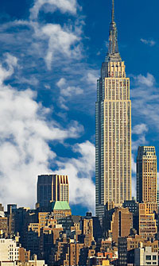
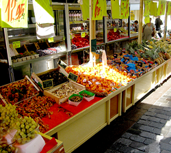

About Meridien GreenStart
GreenStart is a community-based organization dedicated to increasing awareness of green causes and activities. We believe we live best, when we live in harmony with the environment and the natural ebb and flow of the world around us.
Green Buildings earn more Green
Tuesday, October 7, 2014 0:39 AM
There is a growing trend in commercial real estate to earn the EPA's Energy Star label. The award goes to the buildings that qualify in the top 25 percent in energy performance. Tinted windows, heat recovery systems, good insulation, high-efficiency lighting are all taken into consideration to lower a building's energy signature.
The reason is simple: tenants are attracted to the green label achieving higher occupancy rates, increased rents and higher profit margins for buildings that are sold. Energy Star buildings usually cost far less to operate, reducing overhead. Qualified buildings could realize increases in revenues of up to $120,000 for buildings with 50,000 sq ft.
Soon, it may not be an option. Many municipalities and government agencies are reviewing the need to mandate or regulate the process of labeling energy performance in homes and commercial buildings. Who wants to be an owner or tenant of a building that's labeled as an "Energy Waster"?
Shopping green saves energy
Tuesday, October 7, 2014 0:39 AM
Today, fresh fruits and vegetables are shipped all over the world at a high cost and waste of millions of gallons of fuel each year. Buying from your local farmers market can reduce energy waste.
Besides cutting energy waste, buying local benefits the local economy, promotes sustainable agriculture, and keeps your dollars working in your own community.